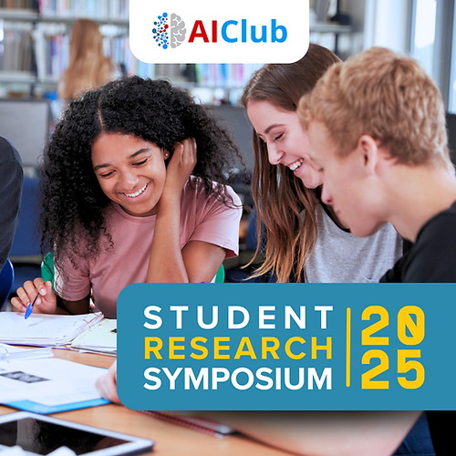
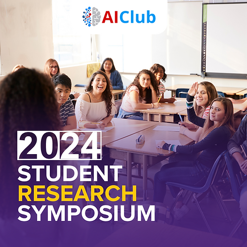
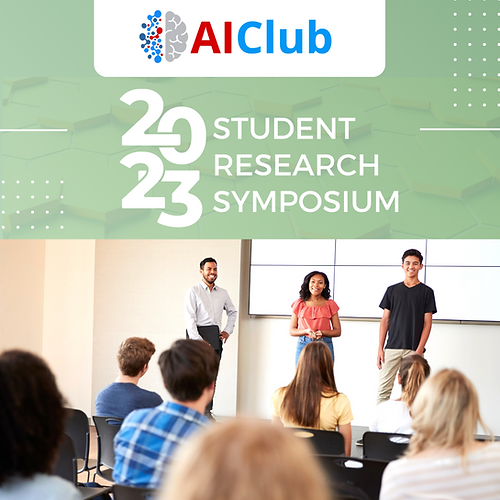
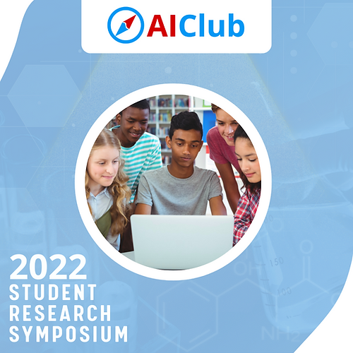
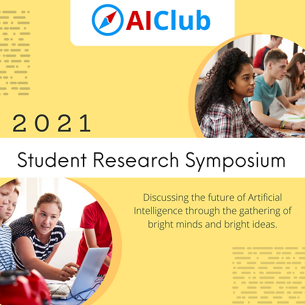

2025AISRS 2025
Healthcare, climate, agriculture, and social impact projects with keynote insights on AI in medicine.
Use the year pages to review symposium themes, keynote context, and student project highlights without leaving this site. The top navigation keeps each year directly accessible.
Each year page contains focused content for that cohort, including keynote highlights and context from the source symposium materials.

2025Healthcare, climate, agriculture, and social impact projects with keynote insights on AI in medicine.

2024Industry keynote perspectives and student projects spanning practical and creative AI applications.

2023Program featuring student talks and keynote framing around language models and model architecture.

2022Research showcase with NASA keynote context and middle/high school presentations across domains.

2021Early symposium cohort with project links and keynote material on open-source AI and research readiness.